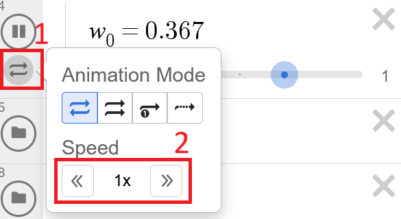

This page compares different ways of visualizing a given 4D object.
Tesseracts are the 4D-equivalent of cubes. These visualizations all represent a tesseract with edges in x, y, z, and w of length 1.
4D structure projected into 3D space
Controls: Click and drag on the visualization to rotate in 3D. Hold ALT and drag vertically to scale. Hold CTRL and drag to pan. Press r to reset. Icons to the right control face visibility.
3D slice visualizer with a slider to slice through fourth dimension
Controls: Click and drag on the visualization to rotate in 3D. Drag w-axis slice to move 3D slice through 4D object. Use wx, wy, and wz to rotate in the WX, WY, and WZ planes respectively.
3D slice visualizer with the fourth dimension animated as a series of 3D slices
Controls: Click and drag on the visualization to rotate in 3D. Change the speed of the animation by pressing on the bidirectional arrow symbol to the left of w0 and adjusting the speed value.

2D represented with the third dimension represented in color and the fourth dimension animated as a series of 3D slices
python XYTC.py --shape tesseractSimilar to XYZ+slider XY+Time+Color is composed of a series of 3D slices which you move through using a slider. However, where XYZ+slider has each slice composed of an XY
Controls: TODO